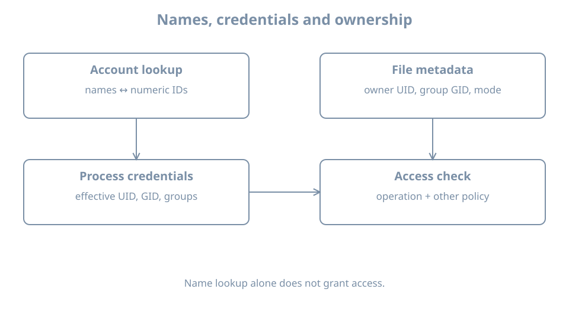

A file is owned by learner, but another process cannot read it. The name printed by a tool is only one part of the answer. Linux checks numeric process credentials against numeric file ownership and permission rules. To explain an access decision, identify the process, the file, its containing directories and the operation being attempted.
This chapter starts the local identity model using the bl02 console. Its lab creates a small private directory in the current user’s home; it does not change other accounts or system files. You need a working learner login and the ability to inspect files and run commands.
Names describe numeric identities
A user ID (UID) identifies a user to the kernel. A group ID (GID) identifies a group. Files record an owner UID and group GID; processes have user and group credentials used in access checks. Tools commonly translate the numbers into names for display. If a name lookup is unavailable, the number can still exist on the file.
The special UID 0 has extensive administrative privilege, but a process’s actual authority also depends on capabilities, namespaces and other restrictions. Do not assume that a username containing admin, or membership in a group with a familiar name, automatically grants every operation.
idid-uid-gid-G
id shows the current process’s identity and group list. -u gives the effective UID, -g the effective primary GID, and -G the group IDs. A process can also have supplementary groups. The account database’s current membership and the credentials already held by a running process can differ after an administrative change: start a new session and inspect its actual credentials.

Process credentials and file ownership meet at an access check.
Read ownership and permissions
Create a private lab directory and file:
umask 077mkdir"$HOME/bl-identity-lab"
If the directory already exists, stop and inspect it instead of overwriting its contents. Only after mkdir succeeds, create and inspect the file:
umask affects newly created objects in this shell; it does not change existing permissions. The named and numeric ls views describe the same file. stat prints the stored numeric owner and group, plus the permission mode in octal.
For a simple regular file with mode 0640, the owner has read and write, the group has read, and others have no permission. For directories, the same letters have different operational meanings: read permits listing names, write permits changes to entries subject to other rules, and execute permits traversal. Access to a file also requires traversal through each parent directory. A readable file behind an inaccessible home directory is not necessarily readable by another user.
A normal mode-bit check considers the applicable owner, group or other class; access control lists and other policies can add rules. Privileged processes and capabilities can alter outcomes. Deeper permissions and policy are covered later; this first model is enough to avoid assuming that a displayed username is the entire authorization rule.
Primary and supplementary groups
The primary group is part of a process’s credentials and normally influences the group of newly created files. A parent directory with the set-group-ID bit or filesystem policy can change the resulting group. Supplementary groups provide additional group memberships for access checks.
Inspect both a process and an account lookup:
idid learnergetent passwd learner
The first command reports this process’s credentials; id learner asks for the named account’s identity and group information, which may differ from an already running session. getent queries the configured name-service database. These reports do not themselves grant or revoke access.
A file’s stored owner is a number. If an account is deleted and that UID later assigned to another account, old files can appear owned by the new account. This is why account retirement must include an inventory and ownership decision; deleting a username does not erase every file created by that user.
Worked diagnosis: group was added but access still fails
An administrator adds a user to a group. The user keeps an old terminal open and still gets permission denied. Possible causes include stale process credentials, missing directory traversal permission, a different group owning the file, an ACL or another policy.
In the failing session run id; record its effective IDs and supplementary groups.
Inspect the intended file and every relevant parent directory with ls -ld and ls -ln.
Start a new authorized login session and run id again; a database change does not rewrite the credentials of existing processes.
Repeat the specific operation and record the result. If it still fails, inspect the applicable ACL and security policy rather than making the whole tree world-writable.
Do not use sudo as the test of ordinary-user access: it tests a different process identity. Likewise, changing a group record does not automatically terminate existing processes or sessions.
Practice and recall
Compare the named and numeric owner/group of note.txt with id. Explain why changing a displayed username would not itself change the file’s stored UID. Verify the directory and file modes, then remove only the lab file and empty directory when done: